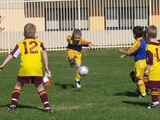
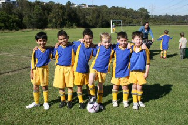
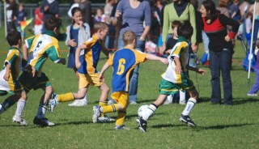

| Match Report - 02 May 2009 |
|
|
|
|
|
|
|
| U6 Purple |
North Ryde 2 - Holy Cross College 10

|
|
|
|

It was the first game ever for all of the team members today, and what a fabulous effort
everyone made. It was wonderful to see all the happy smiling faces as their first game
started. Coach Marc was giving lots of advice and encouragement,
keeping their spirits high throughout the game.
The kids were trying hard to defend the ball, with two brilliant goal saves by
Lukah and Cameron in the first half.
Later in the second half Lucas followed suit with a great goal
save surrounded by HCC players. Will did an impressive ball
block midfield and turned it around towards the North Ryde end of the field.
Lucas and Jayden were working hard
trying to attack and defend the ball. Jasmine had some really
strong long kick offs.
Lukah scored an amazing first goal. What could have been a
near miss by tripping in front of the goal, was quickly saved by headbutting the ball
into the nets. What a star! A second goal was assisted by Cameron
kicking in from the sideline nearby the goals, helping Lukah
line up the goal. Good teamwork boys!
As the game progressed, you could see the concepts starting to come together.
Unfortunately, we were unevenly matched against older more experienced opposition,
however the Purple's displayed enthusiasm and determination to have a fun game. We
are just beginning to see the potential of this great little team. The Mum's and Dad's
are very proud of you. You could hear us cheering loudly.
Congratulations to the Player of the Week - Jasmine.
- Sally Last (Supermum)
|
|
|
|
|
|
We got our shirts and it was the red guys versus the blue and yellows. We scored three
goals and then we scored one goal. I scored a goal. We went one way and then we had
to go the other way. Kate got the trophy and Fletcher did some good tackling.
- Luke Eastwood (Player, aged 6)
|
|
|
| U7 Red A |
North Ryde 9 - All Saints H/Hill B 3

|
|
|
|

Unlike the official start to the season, that wet day way back on the 4th of April,
our 1st game day was a cracker! There was hardly a cloud in the sky, temperature was
spot on and the boys were ready to go.
Our 1st half was a very tight tussle, with both teams going goal for goal, and ending
at 3 all. The main players up forward were Arlen, Alex G and Aden (who scored the 3
goals), all of who showed strong on the ball skills. These guys were ably supported
in the midfield and back by Alex W, Alex C and Troy (that's right, we've got 3 Alex's
on the team... tested the coach's mental capacity). These guys showed a lot of strength
in tackling, and pushed a lot of ball forward through good passing.
In the second half our boys took control, and put in an unanswered 6 goals. As in the
1st half, all the boys played with strength, and showed a lot of skills picked up at
training.
Our "Best Ball Skills" certificate went to Arlen, with our new player for the season,
Alex G taking out the "Best Team Player". The best all rounder trophy went to Alex C.
Well done boys on a great 1st game!
- Rob Wylie (Coach)
|
|
|
| U7 Yellow |
|
North Ryde 0 - All Saints H/Hill A 12
|
|
|
|
Long time coming to get on to the field for the start of the 2009 competition and what a
great day for it. Two debut players Blake and Alex receiving their first Nth Ryde jersey,
a moment the boys should remember for a long time (don't forget us when representing
Australia boys).
Extremely exited boys running on for the first game and a much enthusiastic start for
the debut players Blake and Alex, first comp game ever found the boys right in the mix
fighting for the ball and trying to find a good feel for the moment, great start boys!
Not the score line we were after but that's soccer, we came against a very well drilled
side with some great individual efforts displayed, but that's why we play and train,
to get better and better for our next game.
It was a good effort from the boys with Luke M anticipating the long through balls for
most of the game and Jay & Kaiden's efforts to kick out of the bunched crowd of legs to
change defence into attack, not an easy task. You could see the technical skill from
some off season training shown when Jarrod was injected into the game mid way through
the first half, along with great dribbling, passing and positioning shown from Luke A
when coming from the bench which gave Luke A a well deserved man of the match.
Head up boys you all should be proud of you selves, showing great spirit and gave it
your all and never giving in, we will come against good sides like this in our time
playing soccer and can only train hard so we can prepare for these time.
Go North Ryde

- David Anderson (Coach)
|
|
|
| U8 Red |
|
North Ryde - WPH - Cherrybrook A
|
|
|
|
Finally after all our training we at last we had the opportunity to play our first
game as a team. You could not have asked for better conditions and it was obvious
from the start that the Reds were going to give it everything against the West Pennant
Hills Cherry A team.
Stephen was quick to volunteer as our goal keeper for the first half (it may have been
the keeper's jersey and gloves that influenced his decision) and was quickly into action
making numerous saves and putting his body on the line. His clearing kicks a feature.
The game started positively and it wasn't long before Jack scored after a long weaving
run from the back field. All the players gained confidence as the game continued and
soon Charlie, Jarvis and Nicholas joined Jack on the scoresheet. Charlie and Jarvis
never stopped running and provided many opportunities for other team mates to score
as well as themselves.
The teamwork was a pleasure to watch as the game unfolded. Quick and accurate passing,
determined tackling and hard chasing by all the team was a feature. Lachlan and Laurence
showed some fancy footwork and attacking flair whilst Jaiden was never far from the ball,
showing his pull back on more than one occasion.
Stephen and Hugh swapped places at half time and Hugh did not let the team down closing
down many attacking raids. Stephen now had the chance to show that his ball control and
support of the other players will be a great asset to the team. Lachlan was the rock in
the midfield stopping the opposition with determined defence and providing many
opportunities to attack through good passing.
Everyone came away after the game pleased with the effort of all the team and looking
forward to the rest of the season as we continue to improve and have fun.
Team player for the week - Jack
- Garry Hearne (Coach)
|
|
|
|
|
|
The Under 8 Division White team made a positive start to season and showed there is
plenty of promise in the team for the season ahead.
Up against a Beecroft team who came out fired up and made most of the attacking play
early on North Ryde came back with a strong second half. At goal keeper for the first
half Hayley made some great saves and kept the score line down.
After finding their feet in the second half the North Ryde team made some strong
attacking play and had some great shots on goal with Salim, Christian and Jack
showing good skills. Lioda, Zane and Austin showed some great support play and were
enthusiastic getting back in defence. Will, James and Christian chased the ball hard
all day and made opportunities with some good passing.
The player of the day went to Connor who was goal keeper in the 2nd half and kept
Beecroft scoreless with some amazing saves.
Not a bad start all round and with the effort the team showed on Saturday there will
be plenty of fun and goals to come.
- Lee Crafar (Coach)
|
|
|
|
|
|
The U9 Div 1's were up against it on an early morning at the James
when-will-they-cut-the-grass Henty Park in Dural, facing a determined Normanhurst
outfit that put North Ryde on the back foot as soon as the whistle blew.
It was a rather sluggish start from the North Ryde squad which we quickly attributed
to the early morning start, but which cost them a goal within minutes of the first
half when Normanhurst took advantage of a deflected ball and slotted it into the nets.
North Ryde had their work cut out defending their territory and keeping Normanhurst
at bay, but came back just before half time with a terrific surge up the field that
created some havoc amongst the opposition backs and gave Adam the opportunity to bury
the ball in the nets and even up the scoreline.
The second half took off at the same frenetic pace where the first half had left off,
and Normanhurst used their seemingly inexhaustible arsenal of substitutions to good
effect. But North Ryde stuck to their guns and frustrated the Normanhurst attacks with
timely and sometimes quite physical defending. I recall Shannon doing a complete
somersault through the air after pouncing on the ball at the exact same moment as his
opposite number. Normanhurst's second goal came from an unfortunate rebound off the
keeper, who had done well to save a goal off the original shot, to give them a 2-1 lead.
North Ryde persistently worked the ball into the opposition danger zone but just seemed
to lack that animal aggression required to finish the job off. They came very close on
one occasion, however, when Patrick found himself with just enough room to swing his
right boot and power a ball towards the goal that all but went in, crashing into the
left post and sparing Normanhurst the equaliser.
It was a hard-fought contest against a strong opponent, and North Ryde gave a good
account of themselves and the skills that they are slowly but surely assembling to work
and function as a single team. We look forward to the return match against Normanhurst
later in the season.
- Mark Howard
|
|
|
|
|
|

Our team was coming into today's game full of confidence after their previous win.
With the week off due to Anzac day, the team had put in their usual hard work at
training, and was destined to carry on their good form.
After setting out from home at 8am for our 9:15 kick off, our team was soon put under
a lot of pressure as the Hawks had found themselves with an early goal. They had some
long range shooters in their team and all the Hawks shot seem to find the back of the net.
It was half time and the Hawks up by 4-0. It was off for half time refreshments and to
work out how to stop the flow of goals. The coach's talk at half time worked as all the
players seemed more intent to pass the ball between them and move the ball into the
oppositions half. Rhea and Oscar were great up front with many shots being saved or
blocked by defenders. The middle of the park did a lot of running with Hamish putting
his body on the line and creating some great runs with the ball. Andrea proves week in
and week out that she can mix it with the big boys, with her persistent running and
tackling.
A very good second half from the team as it was one goal each for most of the half with
the Hawks getting their 6th goal right at the end of the game with Matthew showing he is
very capable in goals as well as on the field. Well done to Oscar for scoring our goal,
and well done to all that played the game, finishing with hand shakes and smiles.
- Stuart Sharpe (Parent)
|
|
|
|
|
|
Another sparkling morning! It was so nice to be up and amongst it, at our new home
ground at James Henty. After about 3 minutes, we could see we were in for a real battle.
All Saints were relentless in their attack and first half goalie
Thomas had to pull off a few heroic saves. He must have been
practising those punt kicks as some of them were landing on half way!
The half time score of one nil done was a true indication of the trend of play, but
we really could have had a few goals up on them if it wasn't for their goalie pulling
off some fabulous saves. Maggie, Ben,
Thomas, Benyad,
Massie and our lone goal scored by Chris
all had real goal scoring chances and the huge crowd on the side line were kept very
entertained with a real 'end to end battle'.
Tim, Josh and player of the match
Saxon were very thoughtful with their passing and ball control.
Julian was a standout with a very solid effort in defence and
was unlucky to be pipped for the trophy handling honours at the end of the game. Everywhere
man Luke was showing his season of indoor soccer was put to good
use with some excellent passing - and Brooke did some outstanding
saves in goals as well as some brave defending. Lucy continues to
impress getting in and having a go - for her first year of soccer. I am sure all the players
will keep remembering that free space and positional play are the key ingredients in keeping
the enjoyment factor to a maximum.
In the end, we were beaten by a side who had more guns than us - but we were far from
disgraced. Well done to all the players, it looks to me like you are really enjoying the
season and will come together as a formidable squad in the very near future.
- Andrew Curdie (Coach)
|
|
|
|
|
|
We started one player short but 10 minutes into the game with the arrival of Emanoeil
and Q One we had a full squad except Elia who was sick. Welcome Tim playing his first
game of the season.
North Ryde went on the attack early with two attempts by Luke. Good team work with the
next move set up by Ben passed to Luke then a header by Hayden was a close call. Suddenly
a big kick from Kyle went into the goals but the Glenhaven goalie managed to hit it out
at the last moment. The pressure was paying off with Hayden hitting a beautiful kick
straight into the goals. North Ryde were on the board 1-0.
Next Emanoeil chipped a lovely ball into the goals but was called offside and goal
disallowed. Excellent goalkeeping work from Nat and Lewis kept all Glenhaven attempts
fruitless. Half time score 1-0.
Lots of good attacking early in the second half especially by Tim, Daniel, Manavjot and
Chris saw North Ryde take the ball off Glenhaven several times and with good passing down
the wings set up the next run by Luke who outran both squads and better the goalie to kick
straight into back of the nets. 2-0.
A few troubling moments when Glenhaven advanced on our goals but good defensive work by Q
One and ever reliable defender Chris kept them out. Hayden changed into goals and Lewis
was running in the midfield. A beautiful cross by Daniel to Emanoeil who almost scored.
Comment from the sideline was that players displayed good pull back ball technique - thank
you Kickstart for all that skill training! More passing and pressure on Glenhaven led to
Kyle attacking goal upfront 3-0. With Nat upfront the forwards were hot and Daniel scored
from the right side of the goals 4-0.
Full time score 4-0.
An exciting game to watch and a great display of team work considering only a few players
remain from last year's team. Bodes well for a good season ahead. Well done boys!
- Frances Hesse (Parent)
|
|
|
|
|
|
North Ryde 35/2 v Gladesville Ravens, hallowed turf at Nth Ryde Oval (well furrowed!)
It is with great pressure, I mean pleasure that I again bring you the reports from the
old boys games at Nth Ryde Soccer club! I was going to pass up on the opportunity to
write the reports as there didn't seem to be much interest last year (except for Pep,
MVH and a few others who sporadically read them) in reading my reports, but I have had
my arm twisted and have agreed to document the ups and downs and trials and tribulations
of the Over 35's. This does mean boys that my alcohol intake will go down, and that is
a HUGE sacrifice for me!
On with the show!
It was the local derby between Nth Ryde and Gladesville Ravens and we all know how much
Nth Ryde loves to beat the Ravens. The pitch was a bit rough but nevertheless the game
was going to be played no matter what! The squad was almost complete with only Carl being
absent with some sort of excuse! Actually, bravely, Carl showed up to support his team
even though he had only got out of a coma the week before! We were so glad to see him
looking good and eager to play soccer next week.
The game started at a frenetic pace and Nth Ryde just couldn't seem to settle and play
the game at their pace (slowwwwww)! There was also a lot of fire out on the pitch;
however the ref had things in hand. As I wasn't going to write the reports I didn't
really pay too much attention to who was doing what, so I'll just skip to the part
where Pierre scored the goal! Let me tell you, it was a cracker and I was very glad
he was on the end of it! It was a great come back for Pierre who sat the last part of
the season out last year with a badly broken shoulder. It was terrific to see him get
on the board. The boys played well to hold the Ravens out, Agro had a great game in
goals and the backs defended brilliantly. All round it was a good team performance.
I think you may need to go to some Wednesday night training though boys! Fitness was
the only problem!
1-0 win to Nth Ryde
Let's do it again this weekend at Magdala and I promise to mention more names next time!
- Lhan Gannon (Sports Correspondent Extraordinaire)
|